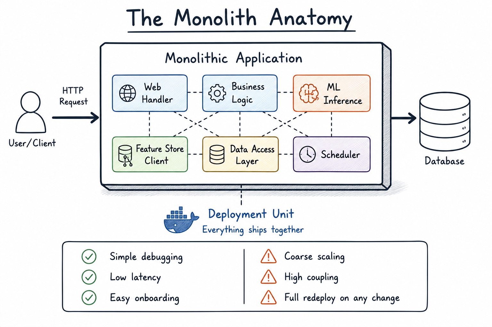
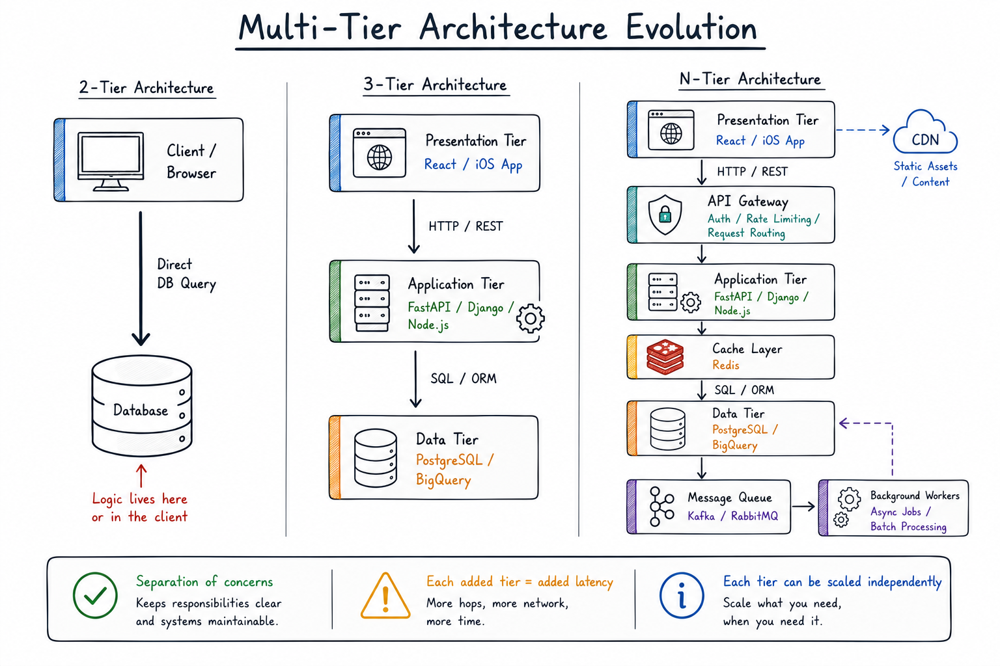
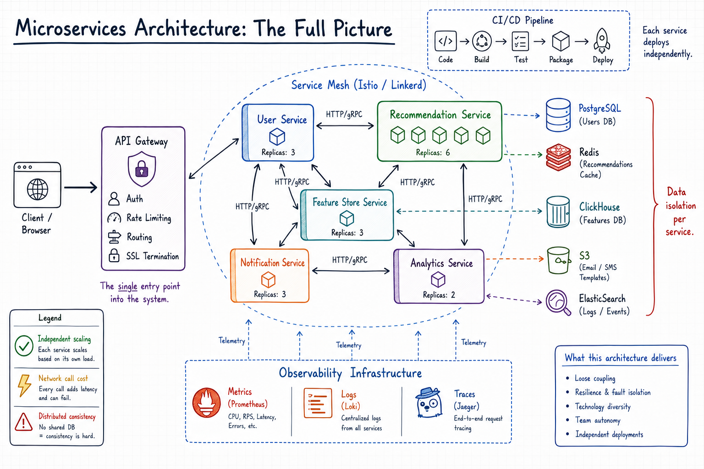
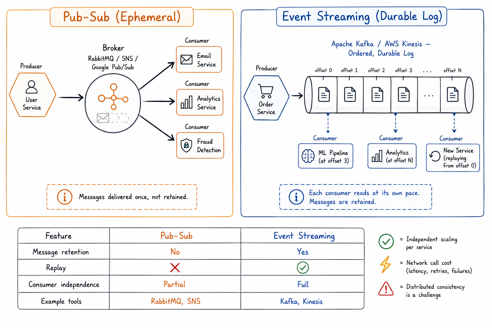
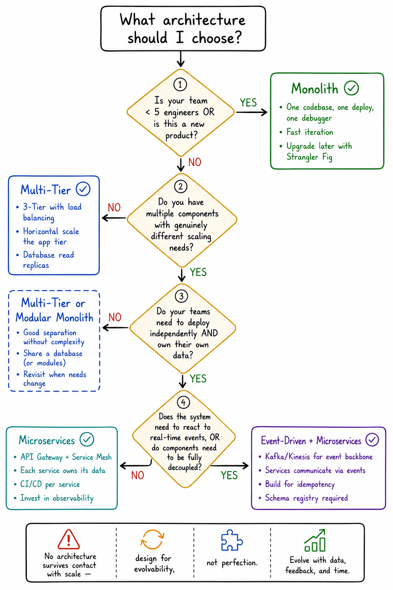

"All architectures are wrong, but some are useful. The art is knowing which tradeoffs you can live with."
Introduction: Why Architecture Is Not About Boxes and Arrows
If you've spent most of your career working with data — wrangling DataFrames, training models, writing Spark jobs — you've probably had a moment where a seemingly innocent question exposes a gap: "Should we process this in real-time or batch?" "Who owns this data contract?" "Why does our ML pipeline time out when the user-facing service spikes?"
These aren't data questions. They're architecture questions in disguise.
Software architecture is the set of structural decisions that determine how a system's components communicate, scale, fail, and evolve. It is not a formality to be drawn on a whiteboard before the real work begins — it is the real work, just moved upstream. The cost of a wrong architectural choice compounds quietly: it lives in your on-call rotation, in the 3 AM pages, in the migration sprint that ballooned from two weeks to six months.
This article walks through four dominant architectural styles — Monolithic, Multi-Tier, Microservices, and Event-Driven — from first principles. We'll build intuition before introducing jargon, explore the genuine tradeoffs instead of hand-waving, and surface the practical signals that help you choose one approach over another. Where relevant, we'll ground examples in the realities of data-intensive and ML-heavy systems, because that context changes the calculus significantly.
Let's start at the beginning — which, architecturally speaking, is usually a monolith.
Monolithic Architecture — Where Every System Begins
The Intuition
Imagine you're building the first version of a recommendation engine. You need a web server to handle requests, a model inference layer, a feature store lookup, and a database to log results. The fastest path to production is to write it all in one place: one repository, one deployment artifact, one process humming away on a server.
Congratulations. You have a monolith.
There is nothing pejorative about this. A monolith is a single, unified application where all components share the same runtime, codebase, and deployment lifecycle. Your web handler calls your model directly — not over a network, not through a message queue, but as a local function call. It's the architectural equivalent of cooking in a studio apartment: everything is within reach, nothing requires coordination.
Why Monoliths Are Actually Great (At First)
The advantages of a monolithic architecture are not merely theoretical — they're viscerally real in the early life of a product:
✓ Advantages
- Development simplicity — one codebase, one debugger, fast onboarding
- Deployment triviality — one pipeline, one artifact to containerize
- Low-latency internally — function calls, not HTTP; microseconds, not milliseconds
- Simple testability — spin up one process, run your entire integration suite
✗ Drawbacks
- Coarse-grained scaling — can't scale one component without scaling all
- Growing coupling — changes ripple unpredictably as the codebase grows
- Risky deployments — every feature ships together; one bug delays all
- Single point of failure — one bad exception, the whole app goes down

When the Monolith Still Wins
The narrative of "monolith → microservices" being an inevitable progression is largely a tech industry myth. Many successful, profitable products run as monoliths. Basecamp, Stack Overflow, Shopify — deliberate engineering organizations that chose cohesion over distribution. For data science and ML teams specifically, the monolith often remains correct for internal tooling, batch pipelines, and experimental ML systems.
Python · FastAPI monolith# A perfectly valid "monolithic" ML service
# Everything lives in one FastAPI app — and that's fine
from fastapi import FastAPI
from model import load_model, predict
from features import compute_features
from db import get_user_context
app = FastAPI()
model = load_model("s3://models/recommender_v3.pkl")
@app.get("/recommend/{user_id}")
async def recommend(user_id: str):
context = get_user_context(user_id) # local function call
features = compute_features(context) # local function call
predictions = predict(model, features) # local function call
return {"recommendations": predictions}
Every call here is in-process, sub-millisecond, easily debuggable. There's no service discovery, no retry logic, no distributed tracing. For a team of three serving ten thousand users, this is not a compromise — it's the right architecture.
Multi-Tier Architecture — The Original Separation of Concerns
The Problem That Tiers Solve
In the early days of web applications, the most common architecture was 2-tier: a client talking directly to a database. This worked until it didn't — until multiple clients needed the same logic, until a developer accidentally wrote a query that locked the production database, until you needed to add caching without rewriting the client.
The insight that changed everything was deceptively simple: separate the thing that presents from the thing that decides from the thing that persists. Multi-tier architecture formalizes this. It organizes applications into horizontal layers where each has a distinct responsibility and communicates only with adjacent layers.
The Three Flavors
2-Tier: Client → Database
The most primitive separation. A client — a web browser, a Python script, Jupyter — communicates directly with a database server. Business logic lives in the client or as stored procedures. Still common in data engineering: notebooks querying warehouses, Metabase running direct SQL. Works well when the "application" is a read layer on well-governed data.
3-Tier: Presentation → Business Logic → Data
The canonical web architecture. A Presentation Tier (browser, mobile app) displays data and captures user intent. An Application/Logic Tier (FastAPI/Django/Node server) processes requests and orchestrates data access. A Data Tier (Postgres, BigQuery) persists state. For data engineers, the logic tier maps directly to your transformation layer — your dbt project, your Airflow DAGs, your Feature Store API.
Tier 1: The Presentation (or Web) Tier
This tier faces the public internet, accepts incoming web requests from users, and securely routes that traffic to the internal systems, managing the flow of communication.
nginx · load balancer config# nginx upstream for a 3-tier ML API
upstream app_servers {
least_conn; # route to the server with fewest active connections
server app1.internal:8000 weight=3;
server app2.internal:8000 weight=3;
server app3.internal:8000 weight=1; # new server, lower weight
}
server {
listen 80;
location /api/ {
proxy_pass http://app_servers;
proxy_next_upstream error timeout http_503;
}
}
Code Explanation
This is a configuration script for Nginx (web server software). In this specific snippet, it is being set up to act as a load balancer and a reverse proxy for a Machine Learning (ML) API.
1. The upstream Block (The Server Pool)
-
upstream app_servers: This creates a group or "pool" of backend servers and names itapp_servers. -
least_conn;: This is the routing strategy. Instead of just handing out requests in a strict rotation (round-robin), it tells Nginx to send the next incoming request to whichever server currently has the fewest active connections. This is great for ML APIs where some requests might take longer to process than others. -
server ... weight=X;: These lines define the actual machines doing the work. -
app1andapp2have aweight=3. -
app3has aweight=1. -
Because of the weights,
app1andapp2will be assigned roughly 3 times as much traffic asapp3. The comment mentionsapp3is a "new server," so they are likely keeping its weight low to test it safely without overwhelming it.
2. The server Block (The Traffic Cop)
-
listen 80;: This tells Nginx to listen for incoming web traffic on port 80, which is the standard port for regular HTTP traffic. -
location /api/ { ... }: This rule applies to any web request that starts with/api/(e.g.,http://yourwebsite.com/api/predict). -
proxy_pass http://app_servers;: This is the actual hand-off. When a request comes in for the API, Nginx intercepts it and passes it back to theapp_serverspool we defined at the top. -
proxy_next_upstream ...;: This is a fallback/safety net. If Nginx tries to send a request to one of the backend servers and that server crashes (error), takes too long (timeout), or is temporarily overloaded (http_503), Nginx will automatically try sending the request to the next server in the pool so the user doesn't see an error.
Tier 2: The Application (or Logic) Tier
Represented by the destinations app1.internal, app2.internal, and app3.internal in the code, this is the "brain" of the application. This is where your actual Machine Learning API code runs (often written in Python using frameworks like FastAPI or Flask). Nginx (in Tier 1) passes the baton to these internal servers so they can execute the ML models, process the data, and generate a prediction.
A simple example of a main.py script running on app1.internal might look like this:
Python · FastAPI ML APIfrom fastapi import FastAPI, HTTPException
import psycopg2
import numpy as np
app = FastAPI()
# 1. Load the Machine Learning Model (Simulated)
class GraphRecommender:
def __init__(self):
# In reality, this would load heavy model weights into memory
self.is_warm = True
def predict(self, user_features):
# Simulate a graph-based recommendation calculation
return {
"recommended_nodes": [1042, 831, 992],
"confidence": 0.87
}
model = GraphRecommender()
# 2. Establish a connection to Tier 3 (The Database)
def get_db_connection():
try:
# Connecting to the internal database server
conn = psycopg2.connect(
host="db.internal",
database="ml_features",
user="admin",
password="securepassword"
)
return conn
except Exception as e:
raise HTTPException(
status_code=503,
detail="Database connection failed"
)
# 3. The API Endpoint (What Nginx routes the traffic to)
@app.get("/api/predict/{user_id}")
def get_recommendations(user_id: int):
# Step A: Fetch historical user data from Tier 3
conn = get_db_connection()
cursor = conn.cursor()
cursor.execute(
"SELECT feature_vector FROM users WHERE id = %s",
(user_id,)
)
data = cursor.fetchone()
if not data:
raise HTTPException(
status_code=404,
detail="User not found"
)
user_features = data[0]
# Step B: Run the ML prediction in Tier 2
prediction = model.predict(user_features)
# Step C: Return the result back to the user (via Nginx)
return {
"user_id": user_id,
"recommendations": prediction
}
When deploying an ML API, the incoming network connections are managed by a specialized ASGI (Asynchronous Server Gateway Interface) server such as Uvicorn, which handles the heavy lifting of network traffic, concurrency, and keeping the application alive.
The application is started by running the following from the command line:
uvicorn main:app --host 0.0.0.0 --port 8000In Tier 1, Nginx passes traffic to app1.internal:8000. Uvicorn running on port 8000, receives the request, translates it, and hands it off to your FastAPI app object in main.py to run the machine learning prediction.
Notice how this tier has to do two things: it receives the routed request from Tier 1, and then reaches out to Tier 3 to get the data it needs to run its predictions.
Tier 3: The Data Tier
This tier holds the historical data, feature vectors, or user profiles that the ML model relies on to make accurate predictions. It;s main job is to efficiently store and retrieve data when queried. It typically consists of a database (e.g., PostgreSQL, MySQL) or a data warehouse (e.g., Amazon Redshift). The application tier (Tier 2) communicates with this tier to retrieve and update data.
N-Tier: The Grown-Up Version
Real production systems grow beyond three tiers, adding: a caching tier (Redis between app and database), an API gateway tier (rate limiting and routing before requests reach servers), a CDN tier (static assets distributed globally), and a message queue tier (async decoupling between services). N-tier simply means "more than three layers, each with a specialized role."

The Tradeoffs Are Real
What you gain is real: separation of concerns improves maintainability, the database is never directly exposed to the internet, you can scale the tiers that need it independently. What you pay is also real: every tier boundary is a network hop. A 3-tier system with naive implementation might add 5–10ms to every request. Deployment complexity rises — three codebases, three pipelines, three failure surfaces.
Key Concepts: Scaling Within Tiers
Horizontal scaling means adding more instances behind a load balancer. Traffic distributes across them; any single server can fail without dropping requests. Vertical scaling means making a single instance bigger — simpler, but with hard physical limits. The load balancer is the mechanism that makes horizontal scaling work.
Microservices — The Architecture That Ate the Internet
The Promise (And the Mythology)
Around 2010–2015, a narrative crystallized in the industry: Netflix decomposed their monolith and saved themselves. Amazon teams organized around APIs. The message — often oversimplified — was that microservices were the inevitable destination of any serious engineering organization. The reality is more nuanced, and worth understanding clearly before you drink the Kool-Aid.
A microservices architecture decomposes an application into a collection of small, independently deployable services, each owning a narrow slice of business capability. The UserService manages user identity. The RecommendationService runs inference. They communicate over the network — HTTP/gRPC for synchronous requests, or message queues for async operations. Each service has its own codebase, deployment pipeline, data store, and on-call rotation.
Where Microservices Genuinely Shine
Independent scaling and deployment is the headline benefit. In a monolith, high CPU usage on inference means scaling the entire application. In microservices, you scale only the InferenceService — 50 replicas there, 2 replicas of the lightly-loaded AnalyticsService. Capacity planning becomes precise and cloud costs become attributable.
YAML · Kubernetes deployment# Scale inference independently of everything else
apiVersion: apps/v1
kind: Deployment
metadata:
name: inference-service
spec:
replicas: 50 # scale this independently
template:
spec:
containers:
- name: inference-service
image: ml-platform/inference:v1.4.2
resources:
requests: { cpu: "2", memory: "4Gi" }
limits: { cpu: "4", memory: "8Gi" }
---
apiVersion: apps/v1
kind: Deployment
metadata:
name: analytics-service
spec:
replicas: 2 # this one barely needs anything
...
The above Kubernetes Deployment manifest code tells Kubernetes to maintain a stable set of 50 identical pods (containers running your app) for the inference engine. If a container crashes, Kubernetes will automatically spin up a new one to replace it.
The resources scetion lays a guaranteed baseline and hard ceiling on resource usage. Each of the 50 pods is guaranteed 2 CPU cores and 4 Gibibytes (Gi) of RAM. But if a pod tries to use more than 4 CPUs or 8Gi of RAM, Kubernetes will throttle or terminate it to prevent it from starving other services on the server.
Fault isolation is equally valuable. When the NotificationService goes down in a well-designed system, users stop receiving emails — but they can still use the product. A monolith would fall entirely. The key phrase is well-designed: fault isolation requires deliberate engineering — circuit breakers, bulkheads, graceful degradation.
Technology stack freedom (polyglot architecture) is underrated. The data team writes Python. The core API team uses Go. The ML team deploys a Julia service for numerical computation. Each service is a black box with a network interface — the implementation language is an internal detail. For ML engineering specifically, this is huge.

The Hidden Costs That Nobody Warns You About
Inter-service communication complexity is the implicit tax. In a monolith, a function call is free. In microservices, that same call is now an HTTP request with network latency, serialization overhead, a new failure mode, retry logic, and timeout management. Every service boundary multiplies these concerns.
Python · resilient service call# Naive service call — don't do this
import requests
response = requests.get(f"http://feature-service/features/{user_id}")
# Better: timeouts, retries, graceful degradation
import httpx
from tenacity import retry, stop_after_attempt, wait_exponential
@retry(stop=stop_after_attempt(3), wait=wait_exponential(min=1, max=4))
async def get_user_features(user_id: str, client: httpx.AsyncClient):
try:
response = await client.get(
f"http://feature-service/features/{user_id}",
timeout=httpx.Timeout(connect=1.0, read=2.0, pool=0.5)
)
response.raise_for_status()
return response.json()
except httpx.HTTPStatusError as e:
if e.response.status_code == 503:
raise # trigger retry
return None # degrade gracefully for non-retryable errors
Distributed data consistency is where many microservices migrations quietly break down. In a monolith, a transaction is atomic. In microservices, each service owns its own database — a "transaction" spanning two services is not atomic. This is solved through sagas and eventual consistency patterns, neither of which is simple to implement correctly.
Observability overhead is the third hidden cost. In a monolith, you read one log file. In a microservices system, a single user request might touch 10 services, requiring distributed tracing to understand what happened. Tools like Jaeger or Honeycomb make this feasible — but setting them up correctly is non-trivial work.
The Supporting Infrastructure
Three components are non-negotiable in a microservices architecture:
API Gateway — the single entry point for external traffic, handling authentication, rate limiting, SSL termination, and routing. AWS API Gateway, Kong, and Envoy are common choices.
Service Mesh — a network proxy layer (often sidecar containers) that handles mutual TLS between services, load balancing, circuit breaking, retry policies, and distributed tracing. Istio and Linkerd are dominant. Tradeoff: real resource overhead and significant operational complexity.
CI/CD pipelines — each service needs its own pipeline. Without solid CI/CD, "independent deployment" is theoretical, not actual.
Event-Driven Architecture — Reacting to the World in Real Time
The Mental Model Shift
In traditional request-response architectures, services ask for things. Service A calls Service B: "Give me the user's features." Service B responds. It's a telephone call.
Event-driven architecture flips this. Services announce what happened. The UserService emits: "User 12345 signed up." It has no idea who will react, or when, or how many systems will process it. It puts the event into the world and moves on. This is not a telephone call — it's a newspaper.
The implications are profound. Services become temporally decoupled (the producer doesn't wait for consumers) and spatially decoupled (the producer doesn't know who the consumers are). Adding a new consumer — say, a fraud detection service — doesn't require changing the producer. You simply subscribe.
Two Models: Pub-Sub vs. Event Streaming
These are often confused but represent meaningfully different patterns:
Publish-Subscribe (Pub-Sub) — one producer sends to a topic, multiple consumers receive it. Key property: messages are delivered and not retained. Once all subscribers receive the message, it's gone. Tools: RabbitMQ, AWS SNS, Google Pub/Sub. Best for: fan-out notifications, task distribution.
Event Streaming — maintains an ordered, durable, replayable log of events. Consumers read from a position in the log, at their own pace. A new service can be added and read event history from day one. Tools: Apache Kafka, AWS Kinesis. Best for: audit logs, event sourcing, ML feature pipelines, any system where replay is valuable.

The Three Actors: Producers, Brokers, Consumers
Producers detect and emit events. They don't decide what happens next — that is explicitly not their responsibility. A well-behaved producer emits a clean, schema-validated event and returns immediately.
Python · Kafka producerfrom confluent_kafka import Producer
import json
producer = Producer({
'bootstrap.servers': 'kafka.internal:9092',
'acks': 'all', # wait for all replicas to acknowledge
'linger.ms': 5, # batch messages for 5ms to improve throughput
})
def emit_user_signed_up(user_id: str, email: str, plan: str):
event = {
"event_type": "user.signed_up",
"user_id": user_id,
"email": email,
"plan": plan,
"occurred_at": "2024-11-15T14:23:01Z"
}
producer.produce(
topic='user-events',
key=user_id, # partition by user_id for ordering
value=json.dumps(event).encode('utf-8'),
on_delivery=delivery_callback
)
producer.flush()
Brokers are the infrastructure layer — Kafka clusters, Kinesis streams, RabbitMQ nodes — handling routing, storage, ordering guarantees, and delivery semantics. The broker is why event-driven systems can absorb traffic spikes: the queue acts as a buffer between the rate of production and the rate of consumption.
Consumers subscribe to events and execute business logic in response. The crucial property: idempotency — processing the same event twice produces the same result as processing it once. Distributed systems guarantee at-least-once delivery, not exactly-once. Your consumer will see duplicate events. Design for it from day one.
Python · idempotent Kafka consumerfrom confluent_kafka import Consumer
import redis
redis_client = redis.Redis(host='redis.internal')
consumer = Consumer({
'bootstrap.servers': 'kafka.internal:9092',
'group.id': 'fraud-detection-service',
'enable.auto.commit': False, # manual commit for control
})
consumer.subscribe(['user-events'])
def process_event(event: dict) -> None:
event_id = f"{event['event_type']}:{event['user_id']}:{event['occurred_at']}"
# Idempotency check: have we already processed this?
if redis_client.get(f"processed:{event_id}"):
return # safe to skip
run_fraud_check(event['user_id'], event['email'])
redis_client.setex(f"processed:{event_id}", 3600, "1")
while True:
msg = consumer.poll(timeout=1.0)
if msg: process_event(json.loads(msg.value().decode()))
consumer.commit() # commit after successful processing
EDA Best Practices: The Three You Can't Skip
Idempotency — covered above — is non-negotiable. Use event IDs as deduplication keys. Use database upserts instead of inserts. Track processed event IDs in a fast store.
Dead-Letter Queues (DLQs) — where events go when they can't be processed. Without a DLQ, failed events are either dropped or loop endlessly in a retry cycle that blocks healthy events. Every production consumer group needs one.
YAML · AWS SQS Dead-Letter QueueResources:
MainQueue:
Type: AWS::SQS::Queue
Properties:
QueueName: user-events-processing
RedrivePolicy:
deadLetterTargetArn: !GetAtt DLQ.Arn
maxReceiveCount: 3 # after 3 failures, send to DLQ
DLQ:
Type: AWS::SQS::Queue
Properties:
QueueName: user-events-processing-dlq
MessageRetentionPeriod: 1209600 # 14 days
Event versioning — the least glamorous but most persistently painful practice. Events are contracts. Once a consumer depends on an event's structure, you can't change it without risking breakage. Use a schema registry (Confluent Schema Registry) that enforces compatibility rules. Adopt a versioning strategy before you need it.
Choosing the Right Architecture — A Decision Framework
The question "which architecture should we use?" has no correct answer divorced from context. It is always a question about tradeoffs, and the tradeoffs that matter are specific to your business, your team, and your system's actual requirements.
Axis 1: Business Urgency vs. Architectural Investment
The fundamental tension is between shipping now and building for scale. A monolith ships faster. Microservices scale better. But "scale better" only matters when you need to scale, and most systems never reach the scale where microservices pay for themselves.
Ask honestly: what is the cost of rebuilding this in 18 months if we need to? For many internal data tools and ML systems, the answer is "cheap enough." The pragmatic move: start monolith, modularize boundaries early, distribute only when a specific scaling or independence problem demands it. Netflix didn't start as microservices. Neither did Amazon.
Axis 2: Technical Requirements Matrix
| Requirement | Monolith | Multi-Tier | Microservices | Event-Driven |
|---|---|---|---|---|
| Sub-100ms latency | ✅ Excellent | ✅ Good | ⚠️ Careful design | ⚠️ Queue adds latency |
| Independent team scaling | ❌ Hard | ⚠️ Partial | ✅ Excellent | ✅ Good |
| Real-time data processing | ⚠️ Possible | ⚠️ Possible | ⚠️ Needs EDA | ✅ Native fit |
| Fault isolation | ❌ Single process | ⚠️ Tier-level | ✅ Service-level | ✅ Queue-buffered |
| Data consistency (ACID) | ✅ Native | ✅ Native | ❌ Eventual only | ❌ Eventual only |
| Debugging simplicity | ✅ Single trace | ✅ Good | ❌ Distributed tracing | ❌ Event chain tracing |
| Deployment simplicity | ✅ One artifact | ⚠️ Multiple | ❌ Dozens of pipelines | ❌ + broker ops |
Axis 3: Practical Constraints
The most underappreciated axis. Architecture doesn't exist in a vacuum — it exists inside an organization with real limitations:
Team size — a distributed microservices architecture requires ownership. Each service needs an on-call rotation, a deployment pipeline, a team that understands its internals. A four-person team operating 20 microservices will drown. General rule: you need at least 2–3 engineers per service to justify the overhead.
Budget — microservices means more infrastructure: more Kubernetes nodes, more managed databases, more observability tooling. The total cost of ownership is substantially higher. For data teams with limited platform budgets, this is a real constraint, not an abstraction.
Legacy systems — most architecture decisions aren't greenfield. A migration from a 10-year-old monolith to microservices is a multi-year program. The Strangler Fig pattern — incrementally extracting services while keeping the monolith running — is the pragmatic approach, not a full rewrite.

The ML Engineering Lens: A Special Case
Data and ML systems have architectural needs that general-purpose web systems don't share:
Batch vs. real-time duality. Most ML systems live in two modes: offline training (large-scale batch on historical data) and online serving (low-latency real-time inference). These modes have opposite requirements. A lambda-style pattern — a microservice for online serving, a separate batch system for offline training, sharing data through a feature store — is the common resolution.
Feature stores are an architectural pattern unto themselves — a N-tier system (offline store + online store + feature computation service) that bridges the batch and real-time worlds.
Model versioning and A/B testing demand independent deployment. If inference is buried in a monolith, a controlled experiment requires a full monolith deploy. Extracting inference into a microservice enables canary deployments, shadow mode testing, and traffic-split experiments without touching the rest of the system.
Conclusion: Architecture Is a Conversation, Not a Decision
The most dangerous architectural mistake is treating architecture as a one-time choice rather than an ongoing set of tradeoffs managed with deliberate attention.
Systems evolve. A startup that was right to launch with a monolith in Year 1 may be right to extract its first service in Year 3 and adopt event-driven patterns for its data pipeline in Year 4. This is not architectural inconsistency — it is architectural maturity. The Strangler Fig, the Modular Monolith, the Domain-Driven microservice decomposition: these are evolution strategies, not admissions of past failure.
1. Default to simpler. The monolith is not embarrassing. It is often correct.
2. Modularize boundaries before you distribute them. Clean module interfaces in a monolith make future extraction straightforward.
3. Distribute only when a specific problem demands it. Not because a conference talk made it sound exciting.
4. Invest in observability before you need it. Distributed systems without distributed tracing are archaeology projects.
5. Think about data gravity. Where does your data live, and what architecture lets you process it close to where it sits?
The boxes and arrows on a whiteboard are just notation. The architecture lives in the team structure, the deployment pipeline, the on-call rotation, and the data flows that actually move through your system at 2 AM. Design those deliberately, with clear eyes about the costs and benefits, and you'll make defensible choices that age well.